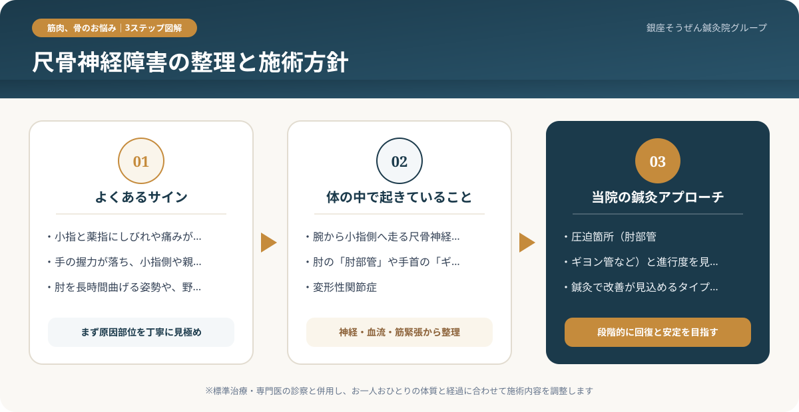

尺骨神経障害の鍼灸
肘や手首での尺骨神経圧迫による小指・薬指のしびれ・筋力低下を、圧迫部位の特定と鍼灸で解放する解説。
まず知っておきたい要点と改善の流れ

腕から小指側へ走る尺骨神経は皮膚の近くや筋肉の間を通るため圧迫を受けやすく、肘の「肘部管」や手首の「ギヨン管」での圧迫・外傷・変形性関節症・ガングリオンなどで発症します。進行すると「痛み→しびれ→麻痺」と進み、指が曲がる「鷲手」に至るため早期対応が重要です。
このようなお悩みはありませんか？
- ✓小指と薬指にしびれや痛みがあり、お箸を持つ・ページをめくる動作がしづらい
- ✓手の握力が落ち、小指側や親指と人差し指の間の筋肉がやせてきた
- ✓肘を長時間曲げる姿勢や、野球・柔道など肘に負担のかかる習慣がある
- ✓病院で手術を勧められたが、保存療法で改善できるか知りたい
当院の施術アプローチ・改善の流れ
なぜ鍼灸で改善へ向かうのか？（作用機序の図解）
尺骨神経障害に対する鍼灸は、トリガーポイント解放と疼痛抑制系の作用機序を通じて、お体本来の回復力を引き出します。

手技では届きにくい深層筋の硬結（トリガーポイント）へ繊細な鍼で直接刺激を届けます。
CGRPや一酸化窒素の放出により微小血管が拡張し、滞っていた発痛物質の洗い流しを促します。
脊髄後角で痛み信号を遮断し、脳幹からの内因性鎮痛物質（エンドルフィン等）の働きを高めます。
防御性の筋スパズムが解け、関節可動域と本来の動きやすさが段階的に回復します。
院長YouTube解説・関連動画
尺骨神経が圧迫されることで、痺れなどの症状を引き起こす
尺骨神経障害は、手の小指側と薬指の一部を支配する尺骨神経が、肘や手首のあたりで圧迫されたり傷ついたりすることで、しびれや痛み、運動麻痺などの症状を引き起こす病気です。
尺骨神経は、肘の内側にある「肘部管」や、手首の「ギヨン管」と呼ばれるトンネルを通っており、肘部管症候群やギヨン管症候群も尺骨神経障害の1つです。
尺骨神経は皮膚表面の近くや筋肉の間を走っているため構造的に圧迫されやすく、特に、肘関節や手関節に症状が生じやすく少しの圧迫でも神経に影響がおこります。
尺骨神経障害の原因は、尺骨神経が圧迫されること
- •野球や柔道など肘関節に負担が掛かるスポーツをしている
- •加齢による肘関節の変形がある
- •骨折、脱臼などの外傷による肘関節の変形がある
- •糖尿病などの全身性の病気を持っている
- •上肢に腫瘍などがある
尺骨神経障害の原因は、尺骨神経が圧迫されたり、引っ張られたりすることです。
尺骨神経の圧迫や引っ張られるような状態になる原因は、外傷、変形性関節症、ガングリオンなどの腫瘍、肘の骨折による変形、長時間の肘の屈曲姿勢、特定の職業や生活習慣などいろいろあります。
🎥 他のYouTube切り抜き・解説を読む（あと2件）▼
当院で見る尺骨神経障害
小指と薬指の痺れで悩んでいる人は多いと思います。当院でもデスクワークや書き仕事が多い人などの中には小指と薬指の痺れで悩んでいる方がたくさん来院されます。
病院に行くと神経伝達速度を測ったりリハビリをしたりメチコバールを処方したり、基本的に様子見の判断をされます。この症状で当院に来院される方の半数は手術をした後に来院されます。この症状は手術しても改善しないことがあり、2回手術している方も多い、見極めが難しい症状です。
この症状は、尺骨神経障害といいます。中でも当院で1番多いのは肘部管障害です。この病気は改善するタイプと改善しないタイプがはっきりしています。
尺骨神経は首のから鎖骨をくぐって、胸、二の腕、肘にある尺骨神経口という骨の間を潜る肘部管を通り、靱帯をくぐって小指に行く神経です。この神経が興奮して痺れを感じるのが尺骨神経障害です。
肘の部分に肘部管という部分を構成する筋肉が3つあります。尺骨手根屈筋、浅指屈筋、深指屈筋です。3つの筋肉が神経の通り道を構成していて筋肉が固まることで神経が圧迫され、症状が出ます。この筋肉を緩めれば神経が回復して改善します。
この症状は、薬指の甲から改善していき、触っていくとだんだん痺れが取れます。すると小指球という小指の部分の筋肉の膨らみがあるところの痺れが取れて、最終的に小指の痺れが取れるという大体3段階で良くなります。
この症状は早く対応しないと神経が壊れて痺れが完全になくならないことがあります。神経の症状は、痛み痺れ麻痺の3段階あります。痺れの段階で対応しないと麻痺につながるのです。
長期間悩んだり神経が機能しなくなってしまうと鷲手という特徴的な手になります。顕著なのは尺骨手根屈筋で、小指の前腕がげっそり痩せます。母子対立筋も痩せて自分の力で手首を曲げることができなくなり、鷲の様な手になってしまうのです。
尺骨神経障害は3つのパターンに分けられます。
- •肘を曲げて痺れる
- •小指と前腕が痺れる
- •小指だけ痺れる
1と2の場合、非常に改善が難しく、3は改善しにくいです。
肘と小指の間の筋肉を摘んでほぐしましょう。筋肉をぐりぐりするのではなく皮膚と筋肉の間をつまみます。あまりぐりぐりすると神経が圧迫されているところから圧迫が強くなり悪くなってしまうことがあるため、皮膚を伸ばすイメージで行います。
時間があればずっとやってほしいです。筋肉は押さずに皮膚のアプローチで十分改善に近づきます。
1と2の場合は手術が必要です。モタモタすると鷲手になってしまう可能性があります。鷲手になると回復は見込めません。
ただし、当院では肘を曲げて痺れる、小指と前腕が痺れる場合以外は手術は勧めていません。病院では手術を勧められることが多いですが改善する特徴がある場合は、手術をしなくても十分に改善する病気のため、手術しなくて良いと思っています。
2024年9月に転倒して脱臼骨折をし尺骨神経麻痺を発症したIさん
Iさん：
2024年9月に転倒して脱臼骨折をし、左肩から右手まで麻痺しています。麻痺感というよりは、指先が少し動くくらいで動かすことができません。1番症状がひどい時が10だとすると今は3くらいで、睡眠は7時間ほどです。症状を感じる場所は右前腕の指先から肘までで、指先はまだ痺れています。親指は反らせることができなくなりました。病院では脱臼した時に腋窩神経を刺激したと言われ、エコーで見てもらったら少し腫れていました。現在病院はリハビリで週1回通っています。
尺骨神経麻痺の特徴は、神経自体に影響があると曲がってきて鷲手になることです。尺骨神経麻痺になると母指対立筋がどんどん痩せていきます。Iさんの場合は、脱臼して神経に影響があったため、正中神経の影響も残っています。この状態を改善することはできませんが、当院ではこれ以上進行させないことと痺れ感を薄くすることはできます。
この症状の1つの山場は尺骨神経領域の症状がどれだけ狭くなるかです。施術をしていくと痺れ感が小指に寄ってきます。現在薬指や前腕が痺れているはずですが、急に消えるわけでなく薄くなってきたり小指の先端に寄ってきたりします。人差し指や中指の先端は正中神経の固有領域と言い、1番感覚が強いところです。そこにどんどん寄っていくのです。
固有領域が切れるかどうかはポテンシャルによって変わりますが、それ以外の周りの部分は当院で力になれます。
Iさんは神経症状特有の湿疹が出ています。左肩の脱臼から始まった症状ではありますが、体が改善しようとして自律神経を刺激し、背中や首周り、腰に湿疹が出ています。湿疹が改善していくのも体が改善していく1つの指標になります。皮膚炎と神経痛は一見関係ないように見えるが、皮膚炎が改善すると神経痛も改善していきます。
Iさんは若干神経麻痺も進んでいます。鷲手の方は今2人通われていますが、改善はできないため症状が進行しないように施術しています。変形は改善が難しく、鷲手は改善しませんが、知覚や出力は改善するため、通院してくださっている方も今は箸で稲荷を持てたり腕立て伏せをできるようになったりしています。Iさんの場合は変形がそんなに進んでいないため改善するタイプではあります。
鷲手になると尺側手根屈筋という筋肉がげっそり痩せてしまいます。そのため血流が回らず寒くなり手袋などをしますが、Iさんの場合、その状態ではないためリカバリーできるアイプです。
Iさんは神経症状特有の湿疹が出ています。左肩の脱臼から始まった症状ではありますが、体が改善しようとして自律神経を刺激し、背中や首周り、腰に湿疹が出ています。湿疹が改善していくのも体が改善していく1つの指標になります。皮膚炎と神経痛は一見関係ないように見えるが、皮膚炎が改善すると神経痛も改善していきます。
Iさんは若干神経麻痺も進んでいます。鷲手の方は今2人通われていますが、改善はできないため症状が進行しないように施術しています。変形は改善が難しく、鷲手は改善しませんが、知覚や出力は改善するため、通院してくださっている方も今は箸で稲荷を持てたり腕立て伏せをできるようになったりしています。Iさんの場合は変形がそんなに進んでいないため改善するタイプではあります。
鷲手になると尺側手根屈筋という筋肉がげっそり痩せてしまいます。そのため血流が回らず寒くなり手袋などをしますが、Iさんの場合、その状態ではないためリカバリーできるアイプです。
尺骨神経は尺側手根屈筋の間を通っているためそこを狙っていきます。尺骨神経沿いを狙っていくのです。ギヨン管で圧迫されることもありますがIさんはここの圧迫はなかったため尺骨神経と肩周りのアプローチを行いました。
側手根屈筋へのストレッチとマッサージは禁止です。神経が興奮しているため揉むと神経自体の興奮が増すことがあるためです。
3回ほど施術を行い、軽くなったり力を入れやすくなったり握力が戻ってきたりしたらリカバリーできます。施術で神経再生を勧めてリハビリを続ければ元に戻ります。出力と違和感は改善しますが、神経の固有領域が良くなってそのあと消えるかどうかは人によって違います。
この症状は当院では比較的多く13年前から見続けています。手術後の方やピアニストの方など色々な症状を見ましたが、Iさんの場合は転んだことで肩が脱臼し腋窩神経を伸ばされて尺骨神経障害になったという外傷性の尺骨神経障害です。
Iさんの症状自体は軽度で神経もゆっくり回復し筋肉の出力も戻ってきていますが神経麻痺が続いていたため、尺骨神経の末期の鷲手になりかけています。手首を曲げる筋肉を担当している神経のため、その神経がうまく働かなくなると手首を曲げることができなくなるのです。
Iさんは鷲手の気配はありますが、神経、筋肉ともに回復しているため改善しやすいです。問題は神経痛と出力が完璧に元に戻るかどうかです。尺骨神経の固有領域である小指側は症状が残る可能性が高いですが薬指や手のひら前腕は改善する可能性があります。
肘・前腕・手首・指のツボ図解とセルフケア
実際の施術ではお一人おひとりの体質・症状に合わせて選穴しますが、肘・前腕・手首・指（腱鞘炎・テニス肘・手根管等）の筋骨格系トラブルの臨床でよく用いられる代表的なツボの目安です。

📌 代表的なツボの詳細一覧表を開く（6穴） ▼
| ツボ名 | 位置の目安 | 主な狙い | セルフケアの注意点 |
|---|---|---|---|
| 曲池（きょくち） | 肘を曲げたときにできる外側のシワの先端 | 外側上顆炎（テニス肘）・前腕伸筋群の過緊張緩和 | 強い腫れや熱感がある急性期は直接強く揉まないようにします。 |
| 手三里（てさんり） | 曲池から手首方向へ指3本分下がった筋肉の盛り上がり | 前腕の張り・腱鞘炎やバネ指につながる筋疲労の緩和 | 痛気持ちいい強さで3〜5秒ずつゆっくり圧迫します。 |
| 外関（がいかん） | 手の甲側、手首のシワから指3本分肘寄りの2本の骨の間 | 手首の背屈痛・前腕のねじり動作痛・自律神経の調整 | 手首を軽く緩めた状態で優しく押します。 |
| 合谷（ごうこく） | 手の甲側、親指と人差し指の骨が交わる手前のくぼみ | 手指の痛み・疼痛抑制系（下行性抑制）の活性化 | 妊娠中の方は強い刺激を控えてください。 |
| 内関（ないかん） | 手のひら側、手首のシワから指3本分肘寄りの2本の腱の間 | 手根管周囲の緊張緩和・前腕屈筋群と自律神経の調整 | しびれが強く響く場合は圧を弱めて軽くさすります。 |
| 大陵（だいりょう） | 手のひら側、手首の横ジワのほぼ中央 | 手首の痛み・手根管症候群や腱鞘の過負担ケア | 神経が浅い場所のため、ゴリゴリ揉まず優しく触れる・温める程度にします。 |
国際査読論文の科学的エビデンス
国際的な医学データベース（PubMed・Cochrane等）で報告されている肘・前腕・手首・指（腱鞘炎・テニス肘・手根管等）の筋骨格系トラブル領域の代表的な査読済み鍼灸研究をまとめています（標準治療との併用や研究上の限界を含めて正確に掲載）。
📚 査読論文データ・PubMed出典リンクを開く（4件） ▼
| 年・研究デザイン | 対象・規模 | 主な結果 | 限界・出典 |
|---|---|---|---|
| 2018年 IPDメタ解析 | 慢性筋骨格痛・頭痛 39 RCTs（n=20,827） | 全領域でシャム鍼・無治療比とも有意優位（P<0.001）、1年後も効果低下約15%で持続。 | 対照設定により効果量変動。 J Pain (PMID: 29198932) |
| 2020年 Cochraneレビュー | 慢性非特異的腰痛 33 RCTs（n=8,270） | 無治療比で直後疼痛（MD -20.32）と機能（SMD -0.53）が臨床的に有意改善。有害事象は軽微。 | 施術者盲検化不可・確実性は中等度〜非常に低。 Cochrane (PMID: 33306198) |
| 2024年 多施設RCT | 慢性坐骨神経痛 216名（6病院・52週追跡） | 4週時点の下肢痛VAS減少30.8mm vs 14.9mm（差-16.0mm, P<0.001）、52週後も持続。 | 中国3次病院限定・施術者盲検化不可。 JAMA Intern Med (PMID: 39401008) |
| 2016年 メタ解析 | 変形性膝関節症 10 RCTs | 短期（13週）で疼痛（WMD -1.24, p<0.001）と機能（p<0.001）が有意改善、26週も機能維持（p=0.016）。 | 試験間の異質性が高く運動療法併用が推奨。 JBJS Am (PMID: 27655986) |
参考文献・出典
- 2018年 IPDメタ解析（慢性筋骨格痛・頭痛 39 RCTs（n=20,827））— J Pain (PMID: 29198932)
- 2020年 Cochraneレビュー（慢性非特異的腰痛 33 RCTs（n=8,270））— Cochrane (PMID: 33306198)
- 2024年 多施設RCT（慢性坐骨神経痛 216名（6病院・52週追跡））— JAMA Intern Med (PMID: 39401008)
- 2016年 メタ解析（変形性膝関節症 10 RCTs）— JBJS Am (PMID: 27655986)
よくある質問（FAQ）
Q. 病院で手術を勧められましたが、必ず手術が必要ですか？▼
Q. どの順番で回復していきますか？▼
Q. セルフケアで注意することはありますか？▼
あわせて読まれる関連疾患（筋肉、骨のお悩み）
お尻から足後ろ側へ広がる痛みやしびれ。原因を見極め、腰・臀部・股関節の深層筋へ的確にアプローチします。
40〜60代に多い肩の激痛・可動域制限（五十肩）を、炎症期と拘縮期の見極めと鍼灸・全身バランス調整で改善する解説。
HTLV-1ウイルス感染者の一部に発症し、脊髄の炎症により両下肢のつっぱり・歩行障害や排尿障害が徐々に進む疾患です。
成長期の中高生がスポーツ中の急激な筋収縮により、骨盤の骨端線付着部で骨の一部が剥がれて起こる骨折です。
免疫系が自身の筋組織を攻撃して炎症と変性を起こし、対称性の筋力低下や筋痛をきたす全身性のリウマチ性疾患群です。
骨端軟骨とその周囲の軟部組織にX線上の点状石灰化像がみられ、低身長や関節・脊柱の異常を伴う遺伝性疾患群の総称です。
CLINICAL RECOVERY CASES
✨ 実際の臨床改善事例・回復経過を見る
銀座本院をはじめ各院での実際の改善事例を症状別に絞り込んでご確認いただけます。
おひとりで悩まず、まずはご相談ください
銀座本院・川口・大宮・横浜・博多・田無の各院でご予約を承っております。